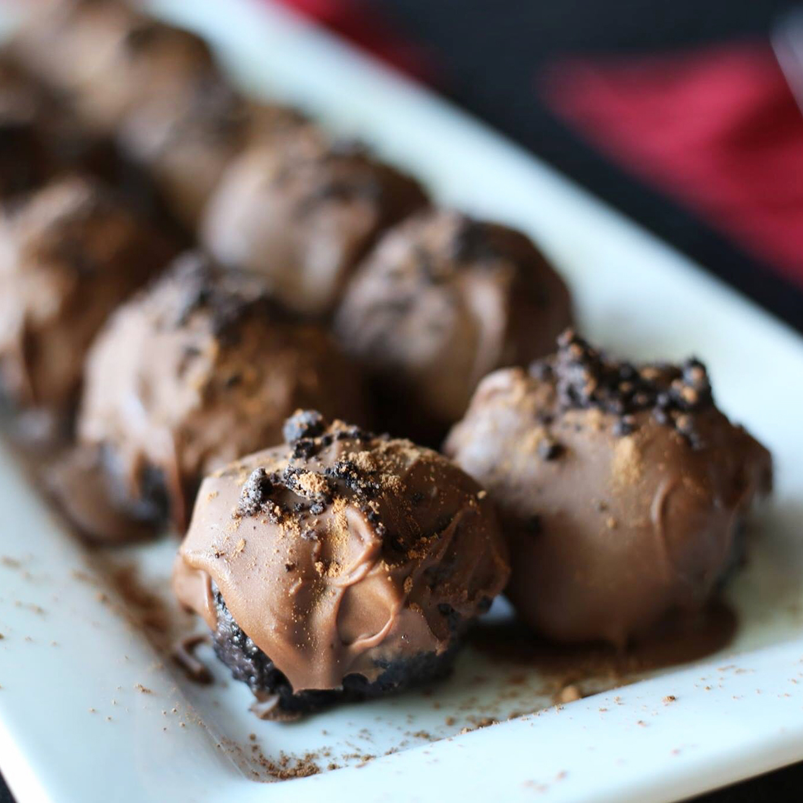

Easy OREO Truffles

Description
These Oreo truffles are very easy and delicious. You can't go wrong with Oreo, cream cheese, and chocolate!
Ingredients
- 45 OREO Chocolate Sandwich Cookies, divided
- 1 (8 ounce) package PHILADELPHIA Cream Cheese, softened
- 2 (8 ounce) packages BAKER'S Semi-Sweet Baking Chocolate, melted
Steps
- Place 9 cookies in a food processor and blend until finely crushed. Transfer crumbs to a bowl and reserve for later. (Cookies can also be finely crushed in a resealable plastic bag using a rolling pin.)
- Add remaining 36 cookies to the food processor and blend until finely crushed. Transfer crumbs to a medium bowl and stir in cream cheese; mix until well-blended. Roll mixture into 42 balls, about 1-inch in diameter.
- Dip balls in melted chocolate; place on a wax paper-covered baking sheet. (Any leftover melted chocolate can be stored at room temperature for another use.) Sprinkle truffles with reserved cookie crumbs.
- Refrigerate truffles until firm, about 1 hour. Store leftover truffles, covered, in the refrigerator.